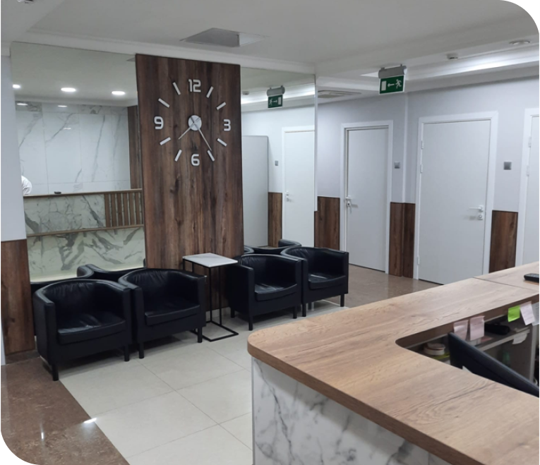

Медицинский центр
Центр традиционной медицины «Синофарм» ориентирован на оказание медицинской помощи
пациентам, в первую очередь, с использованием нелекарственных методов лечения и средств
традиционной китайской медицины (ТКМ).
Адрес
г. Москва,ул. Ленинская Слобода,д. 19, стр. 6
Режим работы
пн-пт с 9:00 до 20:00 сб с 9:00 до 18:00 вс - выходной
